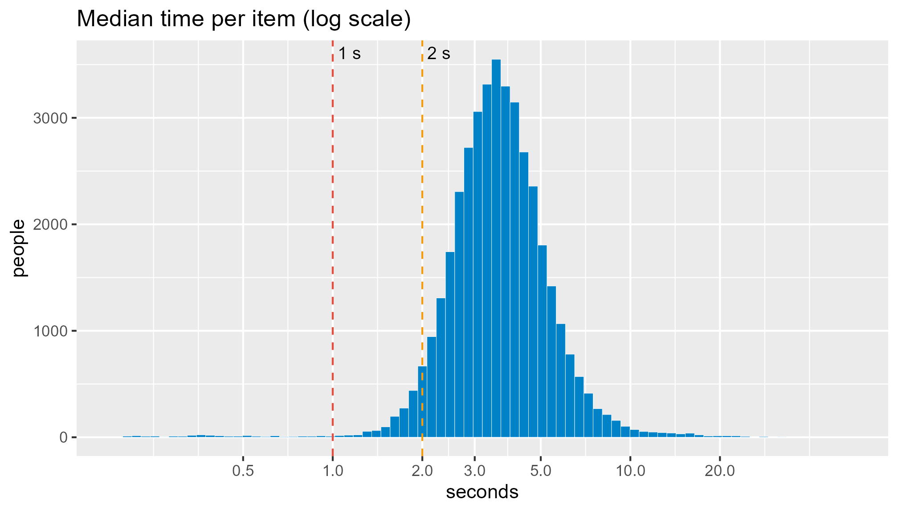
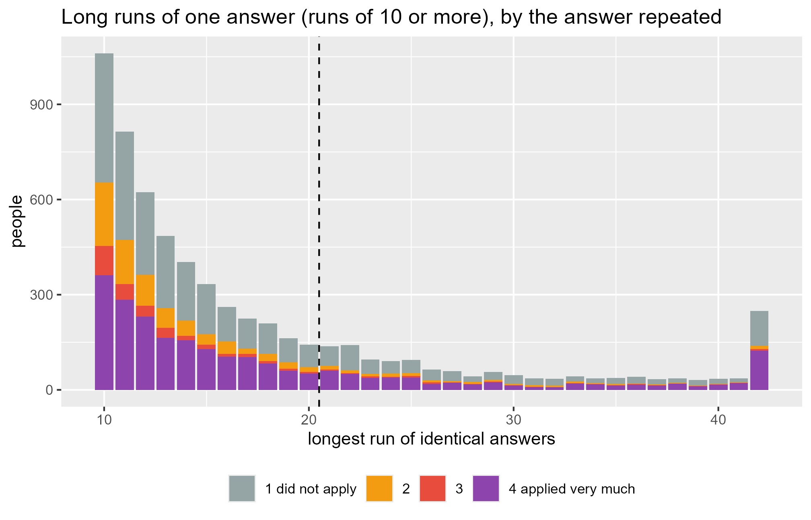
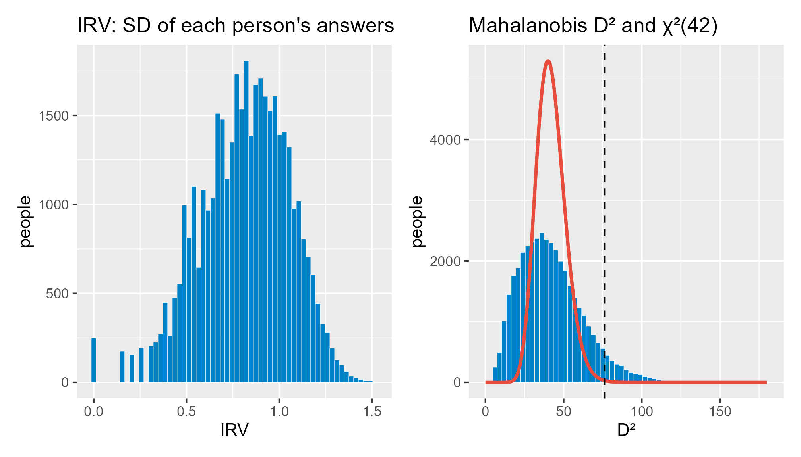
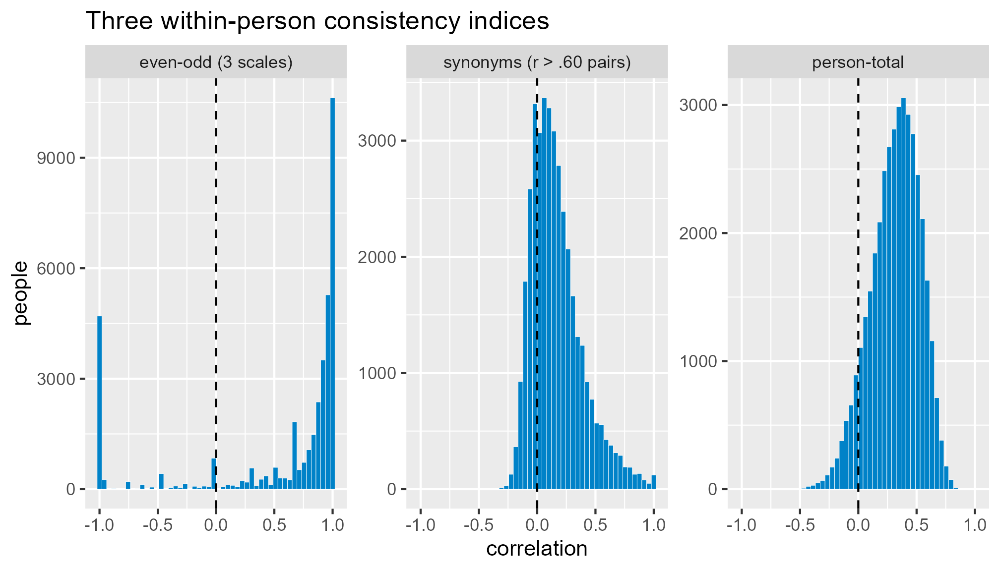
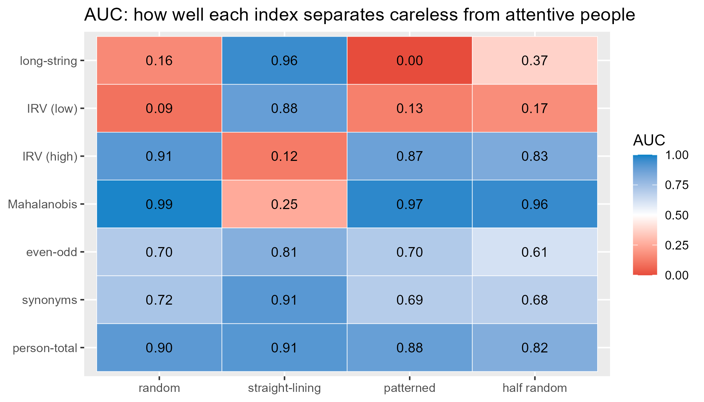
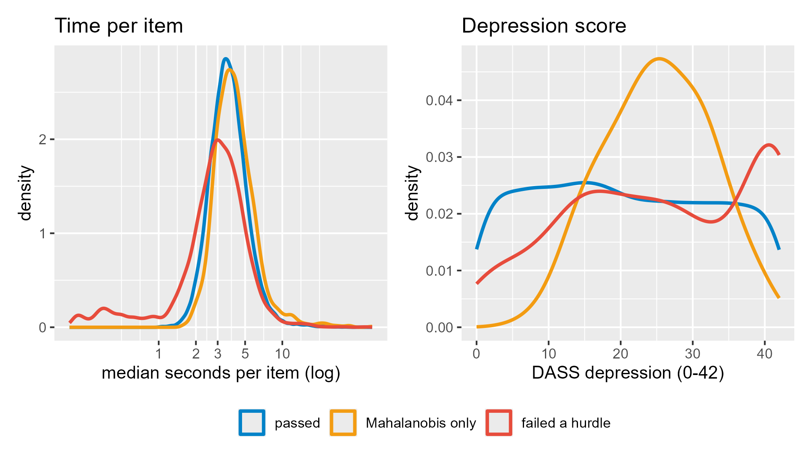

Code
library(ggplot2)
library(patchwork) # put plots together
library(pROC) # ROC curves and the AUCOnline questionnaires are cheap, and so are their answers. Some people click through without reading: to reach the end, to get the feedback, or because they lost interest halfway. Studies that planted checks in their surveys found such careless (or insufficient-effort) responding in roughly 10% of respondents, often more in anonymous online samples (Meade & Craig, 2012; Curran, 2016).
A few careless answers can change results more than their number suggests:
Careless answers come in a few typical patterns:
| Pattern | What it looks like | Typical sign |
|---|---|---|
| Random | Answers chosen by chance | Inconsistent with other answers, unusual profile, often fast |
| Straight-lining | The same answer again and again | Long runs of one answer, almost no variability |
| Patterned | A zigzag such as 1-2-3-4-3-2 or 1-4-1-4 | Regular, but unrelated to the content |
| Partial | Careful at first, careless later (fatigue) | Signs only in the second half |
There are two ways to find them. Direct checks are built into the questionnaire in advance: items with an obvious right answer, instructed items (“choose agree here”) or questions about one’s own effort. Post hoc indices are computed from the answers and response times afterwards. This guide computes all the common ones by hand on real data, tests them on careless responders whose identity we know, and shows how to combine them and how to report the screening.
The data are the Depression Anxiety Stress Scales (DASS-42) answered online in 2017-2019 at the Open-Source Psychometrics Project, the same data as the DASS-42 validation page. That page uses the cleaned data; here we start before any cleaning, because finding the careless records is the point. data/prepare_careless.R keeps every record that answered all 42 items.
The survey had three features that make it ideal for this guide:
load("data/df_careless.rda")
d <- df_careless
items <- paste0("Q", 1:42)
X <- as.matrix(d[, items]) # answers 1-4, in item order
O <- as.matrix(d[, paste0("O", 1:42)]) # O1 = the item shown first, O2 = second, ...
n <- nrow(X)
key <- list(Depression = c(3, 5, 10, 13, 16, 17, 21, 24, 26, 31, 34, 37, 38, 42),
Anxiety = c(2, 4, 7, 9, 15, 19, 20, 23, 25, 28, 30, 36, 40, 41),
Stress = c(1, 6, 8, 11, 12, 14, 18, 22, 27, 29, 32, 33, 35, 39))
scores <- sapply(key, function(k) rowSums(X[, k] - 1)) # DASS scoring: answers 1-4 count as 0-3
c(records = n, items = ncol(X))records items
39775 42 The answers are 1 (did not apply to me at all) to 4 (applied to me very much). Each scale has 14 items and a score from 0 to 42.
Two helpers, used throughout. The first puts each person’s answers back in the order they saw them; the second computes a correlation within each person (each row) at once:
# answers in the order each person saw the items: column k = the answer to the k-th item shown
in_shown_order <- function(X, O) sapply(seq_len(ncol(X)), function(k) X[cbind(seq_len(nrow(X)), O[, k])])
# correlation of row i of A with row i of B, for every row
rowcor <- function(A, B) {
A <- A - rowMeans(A); B <- B - rowMeans(B)
rowSums(A * B) / sqrt(rowSums(A^2) * rowSums(B^2))
}
S <- in_shown_order(X, O)A bogus (or infrequency) item has only one honest answer. Claiming to know a word that does not exist is a sign that the person did not read, or that they claim more than they know.
fake_words_claimed
0 1 2 3
34583 4044 822 326 [1] 13.113.1% claimed at least one non-existent word, far more than any estimate of careless responding. Do they answer the DASS carelessly? We will meet the indices below; as a preview, compare two of them, and the number of real words claimed:
preview <- data.frame(
real_words = d$real_words,
longest_run = apply(S, 1, function(v) max(rle(v)$lengths)), # longest run of one answer
person_total = rowcor(X, matrix(colMeans(X), n, 42, byrow = TRUE))) # agreement with the typical profile
profile_of <- function(group)
t(sapply(split(preview, group), function(s) c(people = nrow(s), colMeans(s, na.rm = TRUE))))
round(profile_of(pmin(d$fake_words, 2)), 2) # 0, 1, and 2 or 3 fake words people real_words longest_run person_total
0 34583 6.64 6.81 0.32
1 4044 8.65 7.21 0.29
2 1148 9.66 8.25 0.26People who claim one fake word answer the DASS much like everyone else: their longest run of identical answers and their person-total correlation (section 7) are close to those of people who claimed none. What they do differently is claim more real words too: they overclaim. One fake word can be an honest mistake (florted looks like a real word); two or three are much less likely. As the rule for this guide we take two or more fake words, which flags 1148 people (2.9%). The DASS-42 validation page used the stricter “any fake word”; both are defensible if decided in advance.
Bogus items work best when the right answer is obvious to anyone reading (“I have never used a computer” in an online survey) and are spread through the questionnaire, so that they catch carelessness where it happens.
Reading a sentence and choosing an answer takes time. The most common rule, from Huang et al. (2012), flags anyone faster than 2 seconds per item. Here every item had its own screen, so we have the time for each item; we use each person’s median item time, which a single long pause cannot distort.
ggplot(d, aes(median_rt)) +
geom_histogram(bins = 80, fill = "#0082c8", colour = "white", linewidth = 0.1) +
geom_vline(xintercept = c(1, 2), linetype = "dashed", colour = c("#E74C3C", "#f39c12")) +
annotate("text", x = c(1, 2), y = Inf, label = c("1 s", "2 s"), vjust = 1.5, hjust = -0.2, size = 3.5) +
scale_x_log10(breaks = c(0.5, 1, 2, 3, 5, 10, 20)) +
labs(title = "Median time per item (log scale)", x = "seconds", y = "people")
people real_words longest_run person_total
under 1 s 262 5.56 25.26 0.04
1-2 s 1501 8.07 14.58 0.29
2-3 s 9960 7.65 7.92 0.32
over 3 s 28052 6.62 5.95 0.32People with a median under 1 second per item are clearly careless: they claim fewer real words than anyone else, their longest run of one answer averages about 25 items, and their answers barely follow the typical profile (person-total near 0). Nobody reads a sentence in under a second. People at 1-2 seconds are a mixture: their person-total correlation is normal (0.29), but their longest runs (14.6 on average) are about twice those of slower people, a sign that some of them are straight-lining. Huang et al.’s 2-second rule came from surveys with many items per page; with one short item per screen and one click per answer, fast but genuine readers can answer in under 2 seconds. Here the 2-second rule would flag 1727 people (4.3%). We use 1 second, which flags 261 (0.7%), and leave the straight-liners among the 1-2 second group to the long-string rule of section 4. The lesson is general: a time cut-off depends on the format of the survey, and should be checked against other indices.
The long-string index is the longest run of identical consecutive answers (Johnson, 2005). It must be computed in the order the person saw the items: here every person had a different order, so a run in item number order means nothing.
longest_run <- function(S) { # S: answers in the order shown, one row per person
run <- best <- rep(1, nrow(S)); answer <- S[, 1]
for (k in 2:ncol(S)) {
run <- ifelse(S[, k] == S[, k - 1], run + 1, 1)
longer <- run > best
answer[longer] <- S[longer, k] # the answer that is repeated in the longest run
best <- pmax(best, run)
}
data.frame(longstring = best, repeated = answer)
}
ls <- longest_run(S)
quantile(ls$longstring, c(.5, .9, .95, .99)) 50% 90% 95% 99%
5.0 12.0 17.3 37.0 Half the people never give the same answer more than 5 times in a row. Runs of 21 or more, half the questionnaire, are rare:
ls$repeated_answer <- factor(ls$repeated, 1:4, c("1 did not apply", "2", "3", "4 applied very much"))
ggplot(subset(ls, longstring >= 10), aes(longstring, fill = repeated_answer)) +
geom_bar() +
geom_vline(xintercept = 20.5, linetype = "dashed") +
scale_fill_manual(values = c("#95A5A6", "#f39c12", "#E74C3C", "#8E44AD")) +
labs(title = "Long runs of one answer (runs of 10 or more), by the answer repeated",
x = "longest run of identical answers", y = "people", fill = NULL) +
theme(legend.position = "bottom")
answer_repeated_42_times
1 2 3 4
110 10 6 123 The bar at 42 is people who gave the same answer to every item. Which answer matters. Did not apply to me at all, 42 times, is what a person without symptoms would honestly say. Applied to me very much, 42 times, would mean the worst level of every symptom, including dry mouth, trembling and difficulty swallowing, all at once: possible, but far less likely than a person holding down one key. Our rule therefore flags runs of 21 or more, unless the repeated answer is did not apply:
flagged percent median_seconds_flagged median_seconds_others
770.000 1.900 2.055 3.610 The flagged people also answered faster than the rest (median 2.05 s per item against 3.61 s), which supports the rule. Half the questionnaire is still a judgement: a person with severe symptoms could honestly give applied to me very much many times in a row, so the cut-off should be generous and decided in advance. On a scale with reverse-worded items there is no exception for any answer: the same answer to items that mean opposite things is a contradiction.
The IRV is the standard deviation of a person’s answers across the items (Dunn et al., 2018):
\[\text{IRV}_i = \sqrt{\frac{1}{k - 1} \sum_{j=1}^{k} (x_{ij} - \bar x_i)^2}\]
A very low IRV means the same few answers throughout, like straight-lining. A very high IRV means answers jumping between the extremes, as random or zigzag clicking does. IRV is a measure of spread, not of content, so it cannot tell a genuinely mixed profile from noise; it is most useful next to the other indices.
The Mahalanobis distance measures how far a person’s whole answer profile lies from the average profile, taking the correlations between the items into account:
\[D^2_i = (\mathbf{x}_i - \bar{\mathbf{x}})^\top \, \mathbf{S}^{-1} \, (\mathbf{x}_i - \bar{\mathbf{x}})\]
where \(\bar{\mathbf{x}}\) is the vector of item means and \(\mathbf{S}\) the covariance matrix of the items. A profile is far away when it combines answers that rarely go together: severe on one depression item but none on its close neighbours, for example. If the answers were multivariate normal, \(D^2\) would follow a \(\chi^2\) distribution with \(k\) = 42 degrees of freedom, and the usual cut-off is its 99.9th percentile:
cut_off expected_share observed_share
76.08376271 0.00100000 0.06328096 p_irv <- ggplot(data.frame(irv), aes(irv)) +
geom_histogram(bins = 60, fill = "#0082c8", colour = "white", linewidth = 0.1) +
labs(title = "IRV: SD of each person's answers", x = "IRV", y = "people")
grid_md <- data.frame(x = seq(0, 180, length.out = 400))
grid_md$y <- dchisq(grid_md$x, 42) * n * 3 # chi-square density scaled to the histogram (bin width 3)
p_md <- ggplot(data.frame(md), aes(md)) +
geom_histogram(binwidth = 3, fill = "#0082c8", colour = "white", linewidth = 0.1) +
geom_line(data = grid_md, aes(x, y), colour = "#E74C3C", linewidth = 1) +
geom_vline(xintercept = md_cut, linetype = "dashed") +
labs(title = "Mahalanobis D² and χ²(42)", x = "D²", y = "people")
p_irv + p_md
The \(\chi^2\) cut-off should flag 0.1% of people; it flags 6.3%. The histogram shows why: the distances have a much longer right tail than the red \(\chi^2\) curve. The answers are four-point ratings, most of them piled at did not apply, nowhere near multivariate normal, so the \(\chi^2\) distribution is the wrong yardstick. Section 11 shows who these “outliers” are: mostly not careless people at all.
An attentive person answers similar items similarly. Three indices turn that into a number per person, each a correlation computed within the person.
Split every scale into its odd- and even-numbered items, score each half, and correlate the odd-half scores with the even-half scores across the scales, within each person; then correct the correlation to full length with the Spearman-Brown formula, \(r_{SB} = 2r / (1 + r)\) (Johnson, 2005). An attentive person’s two halves agree; a random responder’s do not.
half <- function(k, start) paste0("Q", k[seq(start, length(k), by = 2)])
odd <- sapply(key, function(k) rowMeans(X[, half(k, 1)]))
even <- sapply(key, function(k) rowMeans(X[, half(k, 2)]))
r_eo <- pmax(rowcor(odd, even), -0.999) # keep r away from -1, where 2r / (1 + r) explodes
even_odd <- pmax(2 * r_eo / (1 + r_eo), -1) # Spearman-Brown; values below -1 are capped at -1
summary(even_odd) Min. 1st Qu. Median Mean 3rd Qu. Max. NAs
-1.0000 0.4932 0.9023 0.5492 0.9841 1.0000 1463 The index works well for questionnaires with many short subscales: the HEXACO page uses 24 facets and the IPIP-NEO-120 page 30. The DASS has only three scales, so each person’s correlation rests on three pairs of numbers: it is often exactly 1 or −1 by chance, and it is undefined (NA) for the 1463 people whose half-scores do not vary. Section 8 shows what that costs.
Instead of halves of scales, use pairs of items that are highly correlated in the whole sample (Meade & Craig, 2012), here every pair with \(r > .60\), and correlate each person’s answers to the first item of each pair with their answers to the second:
[1] 55 Min. 1st Qu. Median Mean 3rd Qu. Max. NAs
-0.713624 0.007431 0.127464 0.167766 0.279145 1.000000 1251 The 55 pairs give a more stable index than three half-scales. Psychometric antonyms do the same with strongly negatively correlated pairs; the DASS has no reverse-worded items, so it has none. The TIPI has five pairs of opposites, which allow a simpler check, the “agree with both” count used on the Rosenberg Self-Esteem page: agreeing strongly (6 or 7 on the 7-point scale) with both “extraverted, enthusiastic” and “reserved, quiet” is a contradiction.
opposite_pairs_agreed
0 1 2 3 4 5
28353 8827 2070 416 65 44 525 people agreed strongly with both opposites in three or more of the five pairs. Five pairs are too few for a reliable index, and the TIPI came after the DASS, so this check describes attention later in the survey; we report it but do not use it as a rule.
The person-total correlation asks whether a person’s profile has the usual shape: high on the items most people endorse, low on those few people endorse. It is the correlation between the person’s 42 answers and the 42 item means of the sample (Curran, 2016):
Min. 1st Qu. Median Mean 3rd Qu. Max. NAs
-0.6472 0.1811 0.3359 0.3172 0.4723 0.8357 249 Attentive people correlate positively with the typical profile; a random responder’s correlation is near 0. The index is undefined for people who gave the same answer to all 42 items (no variability), and it is low for people who answer almost everything with did not apply, whose few other answers carry little information. That is a reason not to use it alone.
consistency <- rbind(data.frame(index = "even-odd (3 scales)", value = even_odd),
data.frame(index = "synonyms (r > .60 pairs)", value = synonyms),
data.frame(index = "person-total", value = person_total))
consistency$index <- factor(consistency$index, levels = unique(consistency$index)) # panels in the order of the text
ggplot(na.omit(consistency), aes(value)) +
geom_histogram(bins = 50, fill = "#0082c8", colour = "white", linewidth = 0.1) +
geom_vline(xintercept = 0, linetype = "dashed") +
facet_wrap(~index, scales = "free_y") +
labs(title = "Three within-person consistency indices", x = "correlation", y = "people")
The even-odd index piles up at 1 and −1, the sign of a correlation computed from three points; the synonym and person-total indices are smooth.
In real data we never know who was careless, so we cannot tell how well an index works. A simulation can: take people who look attentive, add careless responders whose answers we generate, and see which index finds them.
Response times and the vocabulary checklist cannot be tested this way: we would have to invent the careless people’s times and ticks, and the test would only find what we put in.
set.seed(42)
pool <- which(d$fake_words == 0 & d$median_rt >= 2)
attentive <- sample(pool, 2000)
k <- 50
random <- matrix(sample(1:4, k * 42, replace = TRUE), k)
straight <- t(sapply(1:k, function(i) {
v <- rep(sample(1:4, 1), 42)
changed <- runif(42) < 0.10
v[changed] <- sample(1:4, sum(changed), replace = TRUE)
v
}))
order_pat <- O[sample(pool, k), ]
patterned <- t(sapply(1:k, function(i) {
cycle <- if (runif(1) < 0.5) c(1, 2, 3, 4, 3, 2) else c(1, 4)
start <- sample(length(cycle), 1)
shown <- rep(cycle, 42)[start:(start + 41)] # the zigzag, in the order the items were shown
v <- integer(42); v[order_pat[i, ]] <- shown # back to item order
v
}))
source_half <- sample(setdiff(pool, attentive), k)
order_half <- O[source_half, ]
half_random <- X[source_half, ]
for (i in 1:k) half_random[i, order_half[i, 22:42]] <- sample(1:4, 21, replace = TRUE)
Xs <- rbind(X[attentive, ], random, straight, patterned, half_random)
Os <- rbind(O[attentive, ], O[sample(pool, k), ], O[sample(pool, k), ], order_pat, order_half)
type <- factor(rep(c("attentive", "random", "straight-lining", "patterned", "half random"), c(2000, k, k, k, k)),
levels = c("attentive", "random", "straight-lining", "patterned", "half random"))All the indices again, now on the mixed sample (the means, covariances and synonym pairs come from that sample, as they would in practice):
indices_of <- function(X, O) {
S <- in_shown_order(X, O)
odd <- sapply(key, function(k) rowMeans(X[, half(k, 1)]))
even <- sapply(key, function(k) rowMeans(X[, half(k, 2)]))
r_eo <- pmax(rowcor(odd, even), -0.999)
R <- cor(X); pr <- which(R > .60 & upper.tri(R), arr.ind = TRUE)
run <- longest_run(S)
data.frame(longstring = run$longstring, repeated = run$repeated,
irv = apply(X, 1, sd),
mahalanobis = mahalanobis(X, colMeans(X), cov(X)),
even_odd = pmax(2 * r_eo / (1 + r_eo), -1),
synonyms = rowcor(X[, pr[, 1]], X[, pr[, 2]]),
person_total = rowcor(X, matrix(colMeans(X), nrow(X), 42, byrow = TRUE)))
}
sim <- indices_of(Xs, Os)For each index and each kind of careless responder, the AUC is the chance that a randomly chosen careless responder looks more suspicious on that index than a randomly chosen attentive person: 0.5 is no better than chance, 1 is perfect. IRV appears twice, because both very low and very high values are suspicious. Undefined values (no variability in the answers) count as the most suspicious.
suspicious_if <- c(longstring = "high", irv = "low", irv = "high", mahalanobis = "high",
even_odd = "low", synonyms = "low", person_total = "low")
labels <- c("long-string", "IRV (low)", "IRV (high)", "Mahalanobis", "even-odd", "synonyms", "person-total")
auc_tab <- sapply(levels(type)[-1], function(t) {
keep <- type %in% c("attentive", t)
y <- as.integer(type[keep] == t)
mapply(function(v, direction) {
x <- sim[keep, v]
if (direction == "low") x <- -x # higher = more suspicious
x[is.na(x)] <- max(x, na.rm = TRUE) + 1 # no variability: most suspicious
as.numeric(auc(roc(y, x, direction = "<", quiet = TRUE)))
}, names(suspicious_if), suspicious_if)
})
rownames(auc_tab) <- labels
round(auc_tab, 2) random straight-lining patterned half random
long-string 0.16 0.96 0.00 0.37
IRV (low) 0.09 0.88 0.13 0.17
IRV (high) 0.91 0.12 0.87 0.83
Mahalanobis 0.99 0.25 0.97 0.96
even-odd 0.70 0.81 0.70 0.61
synonyms 0.72 0.91 0.69 0.68
person-total 0.90 0.91 0.88 0.82auc_long <- data.frame(index = factor(rep(labels, ncol(auc_tab)), levels = rev(labels)),
pattern = factor(rep(colnames(auc_tab), each = nrow(auc_tab)), levels = colnames(auc_tab)),
auc = as.vector(auc_tab))
ggplot(auc_long, aes(pattern, index, fill = auc)) +
geom_tile(colour = "white") +
geom_text(aes(label = sprintf("%.2f", auc)), size = 3.5) +
scale_fill_gradient2(low = "#E74C3C", mid = "white", high = "#0082c8", midpoint = 0.5, limits = c(0, 1)) +
labs(title = "AUC: how well each index separates careless from attentive people",
x = NULL, y = NULL, fill = "AUC")
Each index catches some patterns and misses others:
So screening needs several indices, chosen to cover the patterns: at least one for straight-lining (long-string or low IRV) and one for random-like answers (Mahalanobis, person-total or synonyms).
A common approach is a set of hurdles, each with its own rule, decided before looking at the results (Curran, 2016). For these data:
The fourth rule combines two indices because each alone flags many attentive people (section 11): the Mahalanobis distance flags genuine extreme scorers, whose profiles still have the typical shape, and the person-total correlation flags people who answer almost everything with did not apply, whose profiles are not unusual. Requiring both keeps the random-like profiles and spares both groups. In the simulation:
rule_long <- function(ind) ind$longstring >= 21 & ind$repeated != 1
rule_random <- function(ind, cut) ind$mahalanobis > cut & !is.na(ind$person_total) & ind$person_total < .20
caught <- data.frame(straight_lining_rule = rule_long(sim), random_like_rule = rule_random(sim, md_cut))
caught$either <- caught$straight_lining_rule | caught$random_like_rule
round(100 * sapply(caught, function(r) tapply(r, type, mean))) # % of each kind flagged straight_lining_rule random_like_rule either
attentive 1 1 3
random 0 88 88
straight-lining 28 0 28
patterned 0 52 52
half random 0 46 46The two pattern rules together flag 2.9% of the attentive people and catch 88% of the random responders, 52% of the zigzags, 46% of the half-random and 28% of the straight-liners. The straight-liners escape for two reasons: those who repeated did not apply are spared by design, and the 10% of changed answers break many runs before they reach 21. Careless responding that is careless only some of the time is the hardest to find. In real data the time and bogus-word rules add to these, since they catch people the pattern rules miss.
Now on the real data:
rules <- data.frame(
bogus_words = d$fake_words >= 2,
too_fast = d$median_rt < 1,
straight_lining = ls$longstring >= 21 & ls$repeated != 1,
random_like = md > md_cut & !is.na(person_total) & person_total < .20)
flagged <- Reduce(`|`, rules)
data.frame(flagged = colSums(rules), percent = round(100 * colMeans(rules), 1)) flagged percent
bogus_words 1148 2.9
too_fast 261 0.7
straight_lining 770 1.9
random_like 936 2.4flagged_by_any percent
2849.0 7.2 number_of_rules_failed
0 1 2 3
36926 2605 222 22 2849 people (7.2%) fail at least one hurdle, within the usual range for online samples. Most fail only one: the hurdles find different people, which is why there are several. The indices themselves are only loosely related (Spearman correlations):
fake_words median_rt longstring irv mahalanobis even_odd synonyms person_total
fake_words 1.00 -0.11 0.01 0.00 0.00 0.02 0.03 -0.05
median_rt -0.11 1.00 -0.21 0.12 0.18 -0.08 -0.12 0.00
longstring 0.01 -0.21 1.00 -0.54 -0.47 -0.08 -0.17 -0.19
irv 0.00 0.12 -0.54 1.00 0.88 0.17 0.29 0.28
mahalanobis 0.00 0.18 -0.47 0.88 1.00 -0.04 -0.01 0.00
even_odd 0.02 -0.08 -0.08 0.17 -0.04 1.00 0.37 0.25
synonyms 0.03 -0.12 -0.17 0.29 -0.01 0.37 1.00 0.21
person_total -0.05 0.00 -0.19 0.28 0.00 0.25 0.21 1.00Only IRV and the Mahalanobis distance are strongly related (0.88), and long-string goes with low IRV (-0.54). Claiming fake words is unrelated to every pattern index, and response time only weakly related (faster people have longer runs, -0.21). Careless responding is not one thing, and no single index measures all of it.
Compare the results with all records, with the people who passed every hurdle, and with the people flagged. Reliability uses compute_raw_alpha() of the rwf package (Cronbach’s alpha from the covariance matrix). The last column is the correlation of the depression score with TIPI emotional stability (“calm, emotionally stable” and, reversed, “anxious, easily upset”):
stability <- (8 - tipi[, 4] + tipi[, 9]) / 2
describe_group <- function(sel) {
alpha <- sapply(key, function(k) compute_raw_alpha(as.data.frame(X[sel, k])))
r <- cor(scores[sel, ])
c(people = sum(sel), alpha_depression = alpha[[1]], alpha_anxiety = alpha[[2]], alpha_stress = alpha[[3]],
r_depression_anxiety = r[1, 2], r_depression_stress = r[1, 3], r_anxiety_stress = r[2, 3],
depression_mean = mean(scores[sel, 1]),
r_depression_stability = cor(scores[sel, 1], stability[sel], use = "complete.obs"))
}
compare <- rbind(all = describe_group(rep(TRUE, n)), passed = describe_group(!flagged), flagged = describe_group(flagged),
`flagged: straight-lining` = describe_group(rules$straight_lining),
`flagged: random-like` = describe_group(rules$random_like))
round(compare, 3) people alpha_depression alpha_anxiety alpha_stress r_depression_anxiety r_depression_stress r_anxiety_stress depression_mean r_depression_stability
all 39775 0.956 0.916 0.928 0.670 0.740 0.802 21.060 -0.526
passed 36926 0.956 0.911 0.927 0.658 0.733 0.795 20.727 -0.527
flagged 2849 0.954 0.930 0.936 0.762 0.781 0.854 25.383 -0.514
flagged: straight-lining 770 0.987 0.960 0.977 0.945 0.975 0.946 36.268 -0.550
flagged: random-like 936 0.805 0.625 0.681 0.311 0.205 0.589 21.173 -0.153The two kinds of careless responding push the results in opposite directions:
Mixed into the whole sample, the two partly cancel out. Removing all the flagged people changes little here: the alphas stay within .01, and the depression-stress correlation goes from 0.74 to 0.73. Two lessons follow. A high alpha is not evidence that the data are clean: straight-lining raises it. And with only 7% flagged among almost 40,000 people the totals barely move, but in a sample of 200 a handful of straight-liners or random clickers can decide whether a correlation or a factor shows up at all.
Screening can also remove people who answered with care. The Mahalanobis distance with the \(\chi^2\) cut-off flagged 2517 people. Most of them passed every other hurdle:
md_only <- md > md_cut & !flagged
group <- ifelse(md_only, "Mahalanobis only", ifelse(flagged, "failed a hurdle", "passed"))
round(t(sapply(split(data.frame(median_rt = d$median_rt, person_total, depression = scores[, 1],
anxiety = scores[, 2]), group),
function(s) c(people = nrow(s), apply(s, 2, median, na.rm = TRUE)))), 2) people median_rt person_total depression anxiety
failed a hurdle 2849 2.99 0.15 25 24
Mahalanobis only 1540 3.98 0.35 25 17
passed 35386 3.61 0.35 20 14The 1540 people flagged only by the Mahalanobis distance took longer per item than those who passed (median 3.98 s against 3.61 s), their profiles still follow the typical shape (person-total 0.35), and they report more symptoms. They look like careful people with unusual, often severe, symptom profiles: exactly the people a clinical scale exists to find. Removing them would have cut 3.9% of the sample and biased every result towards milder symptoms.
plot_df <- data.frame(group = factor(group, levels = c("passed", "Mahalanobis only", "failed a hurdle")),
median_rt = d$median_rt, depression = scores[, 1])
g1 <- ggplot(plot_df, aes(median_rt, colour = group)) +
geom_density(linewidth = 1) + scale_x_log10(breaks = c(1, 2, 3, 5, 10)) +
labs(title = "Time per item", x = "median seconds per item (log)", y = "density", colour = NULL)
g2 <- ggplot(plot_df, aes(depression, colour = group)) +
geom_density(linewidth = 1, adjust = 1.5) +
labs(title = "Depression score", x = "DASS depression (0-42)", y = "density", colour = NULL)
(g1 + g2 + plot_layout(guides = "collect")) & scale_colour_manual(values = c("#0082c8", "#f39c12", "#E74C3C")) &
theme(legend.position = "bottom")
Multivariate outlier rules come from settings where outliers are errors. In questionnaire data an unusual profile is often a real one. Use the Mahalanobis distance together with an index of careless patterns, or with an empirical cut-off, never alone.
Decide the screening rules before looking at the results, ideally in a preregistration, and report every rule with the number of people it excluded, so that readers can judge, and repeat, the screening. A sensitivity analysis with and without the exclusions shows whether the conclusions depend on them.
Method (data screening):
Before the analyses, we screened the 39,775 complete records for careless responding with four rules decided in advance: claiming to know two or more of three non-existent words in a vocabulary checklist; a median response time below 1 s per item; 21 or more identical consecutive answers in the order of presentation, other than did not apply to me at all; and a random-like answer pattern, defined as a Mahalanobis distance above the 99.9th percentile of the χ²(42) distribution together with a person-total correlation below .20 (Curran, 2016; Meade & Craig, 2012). The indices were computed in R (Version 4.6.2; R Core Team, 2026).
Results:
In total, 2,849 respondents (7.2%) failed at least one rule and were excluded (Table 1), leaving 36,926. Most excluded respondents (91.4%) failed a single rule. Internal consistency was high with and without the excluded respondents (depression α = .96 and .96), and excluding them reduced the correlation between the depression and stress scales from r = .74 to r = .73. A Mahalanobis distance rule alone would have excluded a further 1,540 respondents, who answered more slowly and reported more symptoms than the retained respondents; it was therefore used only in combination with the person-total correlation.
Table 1
Careless-Responding Screening Rules and Exclusions
| Rule | n flagged | % | n flagged by this rule only |
|---|---|---|---|
| Claimed two or more non-existent words | 1148 | 2.9 | 1041 |
| Median response time below 1 s per item | 261 | 0.7 | 93 |
| 21 or more identical consecutive answers (other than did not apply) | 770 | 1.9 | 609 |
| Mahalanobis D² above χ²(42) 99.9th percentile and person-total r < .20 | 936 | 2.4 | 862 |
| Any rule | 2849 | 7.2 |
Note. N = 39,775 complete records. Respondents could fail more than one rule.
Points to remember:
citation() in R gives the exact reference.| Index | Catches | Misses | Watch out for |
|---|---|---|---|
| Bogus / infrequency items | People who do not read | Careful overclaimers look the same | Plausible mistakes; use clear items, or require two |
| Response time | Very fast clicking | Slow careless people | The cut-off depends on the survey format |
| Long-string | Straight-lining | Random and zigzag answers | Compute in the order shown; a run of did not apply can be honest |
| IRV | Low: straight-lining; high: random, zigzag | Content: a mixed profile is not noise | Use next to other indices |
| Mahalanobis | Random, zigzag, partly random | Straight-lining | Over-flags genuine extreme profiles; χ² cut-off wrong for skewed ratings |
| Even-odd | Random answers, given many subscales | Everything, with three scales | Needs many short subscales |
| Synonyms / antonyms | Inconsistent answers | Consistent careless patterns | Needs enough highly correlated pairs |
| Person-total | All patterns fairly well | People who answer almost everything the same | Low for genuine low scorers |
| Overall | Several hurdles, chosen to cover the patterns, decided in advance and reported one by one | High alpha is not a sign of clean data |
Curran, P. G. (2016). Methods for the detection of carelessly invalid responses in survey data. Journal of Experimental Social Psychology, 66, 4–19.
Dunn, A. M., Heggestad, E. D., Shanock, L. R., & Theilgard, N. (2018). Intra-individual response variability as an indicator of insufficient effort responding: Comparison to other indicators and relationships with individual differences. Journal of Business and Psychology, 33(1), 105–121.
Gosling, S. D., Rentfrow, P. J., & Swann, W. B., Jr. (2003). A very brief measure of the Big-Five personality domains. Journal of Research in Personality, 37(6), 504–528.
Huang, J. L., Curran, P. G., Keeney, J., Poposki, E. M., & DeShon, R. P. (2012). Detecting and deterring insufficient effort responding to surveys. Journal of Business and Psychology, 27(1), 99–114.
Johnson, J. A. (2005). Ascertaining the validity of individual protocols from Web-based personality inventories. Journal of Research in Personality, 39(1), 103–129.
Lovibond, S. H., & Lovibond, P. F. (1995). Manual for the Depression Anxiety Stress Scales (2nd ed.). Psychology Foundation.
Maniaci, M. R., & Rogge, R. D. (2014). Caring about carelessness: Participant inattention and its effects on research. Journal of Research in Personality, 48, 61–83.
Meade, A. W., & Craig, S. B. (2012). Identifying careless responses in survey data. Psychological Methods, 17(3), 437–455.
compute_raw_alpha() on this page---
title: "Careless Responding: Screening Questionnaire Data in R"
description: "Finding careless responders in R on real DASS data: bogus items, response times, long-string, Mahalanobis, consistency indices, tested on known cases."
author: ""
output:
html_document:
css: styles.css
theme: flatly
highlight: tango
toc: true
toc_float: true
code_folding: show
self_contained: true
vignette: "%\\VignetteIndexEntry{Careless Responding} %\\VignetteEngine{knitr::rmarkdown} %\\VignetteEncoding{UTF-8}\n"
---
```{r options, echo=FALSE, warning=FALSE, message=FALSE}
directory<-if (rstudioapi::isAvailable()) paste0(dirname(rstudioapi::getActiveDocumentContext()$path),"/") else ""
source(paste0(directory, "R/code_options.R"))
source(paste0(directory, "R/code_rwf.R"))
# wider, shorter figures than the site default; no knitr cache: the page runs in seconds
knitr::opts_chunk$set(fig.height = 4.5, cache = FALSE)
```
## The problem: answers that were not read
Online questionnaires are cheap, and so are their answers. Some people click through without reading: to reach the end, to get the feedback, or because they lost interest halfway. Studies that planted checks in their surveys found such **careless** (or **insufficient-effort**) responding in roughly 10% of respondents, often more in anonymous online samples (Meade & Craig, 2012; Curran, 2016).
A few careless answers can change results more than their number suggests:
- **Random answers** add noise, which weakens correlations. On a scale where most people score low, such as a clinical symptom scale, random answers also look like **symptoms**: a random clicker scores near the middle of the scale, far above the typical healthy respondent.
- **The same answer to every item** (straight-lining) does the opposite: it makes items look perfectly consistent, so it **inflates** reliability and correlations between scales.
- Careless responders can create **extra factors**, for example a "factor" of the reverse-worded items that is really a factor of people who did not notice the wording (see the [Rosenberg Self-Esteem](VALIDATION_RSE.rmd) page).
Careless answers come in a few typical patterns:
| Pattern | What it looks like | Typical sign |
|---|---|---|
| Random | Answers chosen by chance | Inconsistent with other answers, unusual profile, often fast |
| Straight-lining | The same answer again and again | Long runs of one answer, almost no variability |
| Patterned | A zigzag such as 1-2-3-4-3-2 or 1-4-1-4 | Regular, but unrelated to the content |
| Partial | Careful at first, careless later (fatigue) | Signs only in the second half |
There are two ways to find them. **Direct** checks are built into the questionnaire in advance: items with an obvious right answer, instructed items ("choose *agree* here") or questions about one's own effort. **Post hoc** indices are computed from the answers and response times afterwards. This guide computes all the common ones by hand on real data, tests them on careless responders whose identity we know, and shows how to combine them and how to report the screening.
```{r packages}
library(ggplot2)
library(patchwork) # put plots together
library(pROC) # ROC curves and the AUC
```
---
## 1. The data
The data are the Depression Anxiety Stress Scales (DASS-42) answered online in 2017-2019 at the [Open-Source Psychometrics Project](https://openpsychometrics.org/_rawdata/), the same data as the [DASS-42 validation](VALIDATION_DASS.rmd) page. That page uses the cleaned data; here we start **before** any cleaning, because finding the careless records is the point. [`data/prepare_careless.R`](https://github.com/sedzinfo/vignettes/blob/main/quarto/validation/data/prepare_careless.R) keeps every record that answered all 42 items.
The survey had three features that make it ideal for this guide:
- Each item was shown **on its own screen**, in a **random order** for each person, and the time to answer it was recorded.
- After the DASS came a **vocabulary checklist** of 16 words ("tick the words whose meaning you are sure you know"). Three of them, *cuivocal*, *florted* and *verdid*, **do not exist**.
- The Ten Item Personality Inventory (TIPI) has five **pairs of opposite** items, such as "extraverted, enthusiastic" and "reserved, quiet".
```{r data}
load("data/df_careless.rda")
d <- df_careless
items <- paste0("Q", 1:42)
X <- as.matrix(d[, items]) # answers 1-4, in item order
O <- as.matrix(d[, paste0("O", 1:42)]) # O1 = the item shown first, O2 = second, ...
n <- nrow(X)
key <- list(Depression = c(3, 5, 10, 13, 16, 17, 21, 24, 26, 31, 34, 37, 38, 42),
Anxiety = c(2, 4, 7, 9, 15, 19, 20, 23, 25, 28, 30, 36, 40, 41),
Stress = c(1, 6, 8, 11, 12, 14, 18, 22, 27, 29, 32, 33, 35, 39))
scores <- sapply(key, function(k) rowSums(X[, k] - 1)) # DASS scoring: answers 1-4 count as 0-3
c(records = n, items = ncol(X))
```
The answers are 1 (*did not apply to me at all*) to 4 (*applied to me very much*). Each scale has 14 items and a score from 0 to 42.
Two helpers, used throughout. The first puts each person's answers back in the order they saw them; the second computes a correlation **within each person** (each row) at once:
```{r helpers}
# answers in the order each person saw the items: column k = the answer to the k-th item shown
in_shown_order <- function(X, O) sapply(seq_len(ncol(X)), function(k) X[cbind(seq_len(nrow(X)), O[, k])])
# correlation of row i of A with row i of B, for every row
rowcor <- function(A, B) {
A <- A - rowMeans(A); B <- B - rowMeans(B)
rowSums(A * B) / sqrt(rowSums(A^2) * rowSums(B^2))
}
S <- in_shown_order(X, O)
```
---
## 2. Bogus items: words that do not exist
A **bogus** (or infrequency) item has only one honest answer. Claiming to know a word that does not exist is a sign that the person did not read, or that they claim more than they know.
```{r bogus}
table(fake_words_claimed = d$fake_words)
round(100 * mean(d$fake_words >= 1), 1) # % who claimed at least one
```
`r sprintf("%.1f", 100 * mean(d$fake_words >= 1))`% claimed at least one non-existent word, far more than any estimate of careless responding. Do they answer the DASS carelessly? We will meet the indices below; as a preview, compare two of them, and the number of **real** words claimed:
```{r bogus_profile}
preview <- data.frame(
real_words = d$real_words,
longest_run = apply(S, 1, function(v) max(rle(v)$lengths)), # longest run of one answer
person_total = rowcor(X, matrix(colMeans(X), n, 42, byrow = TRUE))) # agreement with the typical profile
profile_of <- function(group)
t(sapply(split(preview, group), function(s) c(people = nrow(s), colMeans(s, na.rm = TRUE))))
round(profile_of(pmin(d$fake_words, 2)), 2) # 0, 1, and 2 or 3 fake words
```
People who claim one fake word answer the DASS much like everyone else: their longest run of identical answers and their person-total correlation (section 7) are close to those of people who claimed none. What they do differently is claim **more real words** too: they overclaim. One fake word can be an honest mistake (*florted* looks like a real word); two or three are much less likely. As the rule for this guide we take **two or more fake words**, which flags `r sum(d$fake_words >= 2)` people (`r sprintf("%.1f", 100 * mean(d$fake_words >= 2))`%). The [DASS-42 validation](VALIDATION_DASS.rmd) page used the stricter "any fake word"; both are defensible if decided in advance.
Bogus items work best when the right answer is obvious to anyone reading ("I have never used a computer" in an online survey) and are spread through the questionnaire, so that they catch carelessness where it happens.
---
## 3. Response time
Reading a sentence and choosing an answer takes time. The most common rule, from Huang et al. (2012), flags anyone faster than **2 seconds per item**. Here every item had its own screen, so we have the time for each item; we use each person's **median** item time, which a single long pause cannot distort.
```{r rt_plot, fig.height = 4}
ggplot(d, aes(median_rt)) +
geom_histogram(bins = 80, fill = "#0082c8", colour = "white", linewidth = 0.1) +
geom_vline(xintercept = c(1, 2), linetype = "dashed", colour = c("#E74C3C", "#f39c12")) +
annotate("text", x = c(1, 2), y = Inf, label = c("1 s", "2 s"), vjust = 1.5, hjust = -0.2, size = 3.5) +
scale_x_log10(breaks = c(0.5, 1, 2, 3, 5, 10, 20)) +
labs(title = "Median time per item (log scale)", x = "seconds", y = "people")
```
```{r rt_profile}
speed <- cut(d$median_rt, c(0, 1, 2, 3, Inf), labels = c("under 1 s", "1-2 s", "2-3 s", "over 3 s"))
speed_profile <- profile_of(speed)
round(speed_profile, 2)
```
People with a median under **1 second** per item are clearly careless: they claim fewer real words than anyone else, their longest run of one answer averages about `r round(speed_profile[1, "longest_run"])` items, and their answers barely follow the typical profile (person-total near 0). Nobody reads a sentence in under a second. People at **1-2 seconds** are a mixture: their person-total correlation is normal (`r sprintf("%.2f", speed_profile[2, "person_total"])`), but their longest runs (`r sprintf("%.1f", speed_profile[2, "longest_run"])` on average) are about twice those of slower people, a sign that some of them are straight-lining. Huang et al.'s 2-second rule came from surveys with many items per page; with one short item per screen and one click per answer, fast but genuine readers can answer in under 2 seconds. Here the 2-second rule would flag `r sum(d$median_rt < 2)` people (`r sprintf("%.1f", 100 * mean(d$median_rt < 2))`%). We use **1 second**, which flags `r sum(d$median_rt < 1)` (`r sprintf("%.1f", 100 * mean(d$median_rt < 1))`%), and leave the straight-liners among the 1-2 second group to the long-string rule of section 4. The lesson is general: a time cut-off depends on the format of the survey, and should be checked against other indices.
---
## 4. Long-string: the same answer again and again
The **long-string** index is the longest run of identical consecutive answers (Johnson, 2005). It must be computed in the order **the person saw** the items: here every person had a different order, so a run in item number order means nothing.
```{r longstring}
longest_run <- function(S) { # S: answers in the order shown, one row per person
run <- best <- rep(1, nrow(S)); answer <- S[, 1]
for (k in 2:ncol(S)) {
run <- ifelse(S[, k] == S[, k - 1], run + 1, 1)
longer <- run > best
answer[longer] <- S[longer, k] # the answer that is repeated in the longest run
best <- pmax(best, run)
}
data.frame(longstring = best, repeated = answer)
}
ls <- longest_run(S)
quantile(ls$longstring, c(.5, .9, .95, .99))
```
Half the people never give the same answer more than `r median(ls$longstring)` times in a row. Runs of 21 or more, half the questionnaire, are rare:
```{r longstring_plot}
ls$repeated_answer <- factor(ls$repeated, 1:4, c("1 did not apply", "2", "3", "4 applied very much"))
ggplot(subset(ls, longstring >= 10), aes(longstring, fill = repeated_answer)) +
geom_bar() +
geom_vline(xintercept = 20.5, linetype = "dashed") +
scale_fill_manual(values = c("#95A5A6", "#f39c12", "#E74C3C", "#8E44AD")) +
labs(title = "Long runs of one answer (runs of 10 or more), by the answer repeated",
x = "longest run of identical answers", y = "people", fill = NULL) +
theme(legend.position = "bottom")
table(answer_repeated_42_times = ls$repeated[ls$longstring == 42])
```
The bar at 42 is people who gave the **same answer to every item**. Which answer matters. *Did not apply to me at all*, 42 times, is what a person without symptoms would honestly say. *Applied to me very much*, 42 times, would mean the worst level of every symptom, including dry mouth, trembling and difficulty swallowing, all at once: possible, but far less likely than a person holding down one key. Our rule therefore flags runs of **21 or more**, unless the repeated answer is *did not apply*:
```{r longstring_rule}
long_flag <- ls$longstring >= 21 & ls$repeated != 1
c(flagged = sum(long_flag), percent = round(100 * mean(long_flag), 1),
median_seconds_flagged = median(d$median_rt[long_flag]), median_seconds_others = median(d$median_rt[!long_flag]))
```
The flagged people also answered faster than the rest (median `r sprintf("%.2f", median(d$median_rt[long_flag]))` s per item against `r sprintf("%.2f", median(d$median_rt[!long_flag]))` s), which supports the rule. Half the questionnaire is still a judgement: a person with severe symptoms could honestly give *applied to me very much* many times in a row, so the cut-off should be generous and decided in advance. On a scale with reverse-worded items there is no exception for any answer: the same answer to items that mean opposite things is a contradiction.
---
## 5. Intra-individual response variability (IRV)
The **IRV** is the standard deviation of a person's answers across the items (Dunn et al., 2018):
$$\text{IRV}_i = \sqrt{\frac{1}{k - 1} \sum_{j=1}^{k} (x_{ij} - \bar x_i)^2}$$
A **very low** IRV means the same few answers throughout, like straight-lining. A **very high** IRV means answers jumping between the extremes, as random or zigzag clicking does. IRV is a measure of spread, not of content, so it cannot tell a genuinely mixed profile from noise; it is most useful next to the other indices.
---
## 6. Mahalanobis distance
The **Mahalanobis distance** measures how far a person's whole answer profile lies from the average profile, taking the correlations between the items into account:
$$D^2_i = (\mathbf{x}_i - \bar{\mathbf{x}})^\top \, \mathbf{S}^{-1} \, (\mathbf{x}_i - \bar{\mathbf{x}})$$
where $\bar{\mathbf{x}}$ is the vector of item means and $\mathbf{S}$ the covariance matrix of the items. A profile is far away when it combines answers that rarely go together: severe on one depression item but none on its close neighbours, for example. If the answers were multivariate normal, $D^2$ would follow a $\chi^2$ distribution with $k$ = 42 degrees of freedom, and the usual cut-off is its 99.9th percentile:
```{r mahalanobis}
irv <- apply(X, 1, sd)
md <- mahalanobis(X, colMeans(X), cov(X))
md_cut <- qchisq(0.999, df = 42)
c(cut_off = md_cut, expected_share = 0.001, observed_share = mean(md > md_cut))
```
```{r irv_md_plot, fig.height = 4}
p_irv <- ggplot(data.frame(irv), aes(irv)) +
geom_histogram(bins = 60, fill = "#0082c8", colour = "white", linewidth = 0.1) +
labs(title = "IRV: SD of each person's answers", x = "IRV", y = "people")
grid_md <- data.frame(x = seq(0, 180, length.out = 400))
grid_md$y <- dchisq(grid_md$x, 42) * n * 3 # chi-square density scaled to the histogram (bin width 3)
p_md <- ggplot(data.frame(md), aes(md)) +
geom_histogram(binwidth = 3, fill = "#0082c8", colour = "white", linewidth = 0.1) +
geom_line(data = grid_md, aes(x, y), colour = "#E74C3C", linewidth = 1) +
geom_vline(xintercept = md_cut, linetype = "dashed") +
labs(title = "Mahalanobis D² and χ²(42)", x = "D²", y = "people")
p_irv + p_md
```
The $\chi^2$ cut-off should flag 0.1% of people; it flags `r sprintf("%.1f", 100 * mean(md > md_cut))`%. The histogram shows why: the distances have a much longer right tail than the red $\chi^2$ curve. The answers are four-point ratings, most of them piled at *did not apply*, nowhere near multivariate normal, so the $\chi^2$ distribution is the wrong yardstick. Section 11 shows who these "outliers" are: mostly not careless people at all.
---
## 7. Consistency indices
An attentive person answers similar items similarly. Three indices turn that into a number per person, each a correlation computed **within** the person.
### Even-odd consistency
Split every scale into its odd- and even-numbered items, score each half, and correlate the odd-half scores with the even-half scores **across the scales**, within each person; then correct the correlation to full length with the Spearman-Brown formula, $r_{SB} = 2r / (1 + r)$ (Johnson, 2005). An attentive person's two halves agree; a random responder's do not.
```{r even_odd}
half <- function(k, start) paste0("Q", k[seq(start, length(k), by = 2)])
odd <- sapply(key, function(k) rowMeans(X[, half(k, 1)]))
even <- sapply(key, function(k) rowMeans(X[, half(k, 2)]))
r_eo <- pmax(rowcor(odd, even), -0.999) # keep r away from -1, where 2r / (1 + r) explodes
even_odd <- pmax(2 * r_eo / (1 + r_eo), -1) # Spearman-Brown; values below -1 are capped at -1
summary(even_odd)
```
The index works well for questionnaires with **many** short subscales: the [HEXACO](VALIDATION_HEXACO.rmd) page uses 24 facets and the [IPIP-NEO-120](VALIDATION_IPIPNEO120.rmd) page 30. The DASS has only three scales, so each person's correlation rests on **three** pairs of numbers: it is often exactly 1 or −1 by chance, and it is undefined (`NA`) for the `r sum(is.na(even_odd))` people whose half-scores do not vary. Section 8 shows what that costs.
### Psychometric synonyms
Instead of halves of scales, use **pairs of items** that are highly correlated in the whole sample (Meade & Craig, 2012), here every pair with $r > .60$, and correlate each person's answers to the first item of each pair with their answers to the second:
```{r synonyms}
R <- cor(X)
pairs <- which(R > .60 & upper.tri(R), arr.ind = TRUE) # synonym pairs
nrow(pairs)
synonyms <- rowcor(X[, pairs[, 1]], X[, pairs[, 2]])
summary(synonyms)
```
The `r nrow(pairs)` pairs give a more stable index than three half-scales. **Psychometric antonyms** do the same with strongly negatively correlated pairs; the DASS has no reverse-worded items, so it has none. The TIPI has five pairs of opposites, which allow a simpler check, the "agree with both" count used on the [Rosenberg Self-Esteem](VALIDATION_RSE.rmd) page: agreeing strongly (6 or 7 on the 7-point scale) with both "extraverted, enthusiastic" and "reserved, quiet" is a contradiction.
```{r tipi_both}
tipi <- as.matrix(d[, paste0("TIPI", 1:10)])
agree_both <- rowSums(tipi[, 1:5] >= 6 & tipi[, 6:10] >= 6, na.rm = TRUE) # pairs 1-6, 2-7, 3-8, 4-9, 5-10
table(opposite_pairs_agreed = agree_both)
```
`r sum(agree_both >= 3)` people agreed strongly with both opposites in three or more of the five pairs. Five pairs are too few for a reliable index, and the TIPI came after the DASS, so this check describes attention **later** in the survey; we report it but do not use it as a rule.
### Person-total correlation
The **person-total correlation** asks whether a person's profile has the usual shape: high on the items most people endorse, low on those few people endorse. It is the correlation between the person's 42 answers and the 42 item means of the sample (Curran, 2016):
```{r person_total}
item_means <- colMeans(X)
person_total <- rowcor(X, matrix(item_means, n, 42, byrow = TRUE))
summary(person_total)
```
Attentive people correlate positively with the typical profile; a random responder's correlation is near 0. The index is undefined for people who gave the same answer to all 42 items (no variability), and it is low for people who answer almost everything with *did not apply*, whose few other answers carry little information. That is a reason not to use it alone.
```{r consistency_plot, fig.height = 4}
consistency <- rbind(data.frame(index = "even-odd (3 scales)", value = even_odd),
data.frame(index = "synonyms (r > .60 pairs)", value = synonyms),
data.frame(index = "person-total", value = person_total))
consistency$index <- factor(consistency$index, levels = unique(consistency$index)) # panels in the order of the text
ggplot(na.omit(consistency), aes(value)) +
geom_histogram(bins = 50, fill = "#0082c8", colour = "white", linewidth = 0.1) +
geom_vline(xintercept = 0, linetype = "dashed") +
facet_wrap(~index, scales = "free_y") +
labs(title = "Three within-person consistency indices", x = "correlation", y = "people")
```
The even-odd index piles up at 1 and −1, the sign of a correlation computed from three points; the synonym and person-total indices are smooth.
---
## 8. Testing the indices on known careless responders
In real data we never know who was careless, so we cannot tell how well an index works. A simulation can: take people who look attentive, add careless responders whose answers we generate, and see which index finds them.
- **Attentive people:** 2,000 records drawn at random from those who claimed no fake word and took at least 2 seconds per item. They are selected on the **direct** checks only, so that none of the pattern indices we are testing has a head start.
- **Careless people**, 50 of each kind, each given the presentation order of a real person:
- **random**: every answer drawn at random from 1-4;
- **straight-lining**: one answer repeated, with 10% of the answers changed at random (nobody is perfectly consistent);
- **patterned**: a zigzag (1-2-3-4-3-2-... or 1-4-1-4-...) in the order the items were shown;
- **half random**: a real attentive person's answers for the first 21 items shown, random answers for the last 21.
Response times and the vocabulary checklist cannot be tested this way: we would have to invent the careless people's times and ticks, and the test would only find what we put in.
```{r simulate}
set.seed(42)
pool <- which(d$fake_words == 0 & d$median_rt >= 2)
attentive <- sample(pool, 2000)
k <- 50
random <- matrix(sample(1:4, k * 42, replace = TRUE), k)
straight <- t(sapply(1:k, function(i) {
v <- rep(sample(1:4, 1), 42)
changed <- runif(42) < 0.10
v[changed] <- sample(1:4, sum(changed), replace = TRUE)
v
}))
order_pat <- O[sample(pool, k), ]
patterned <- t(sapply(1:k, function(i) {
cycle <- if (runif(1) < 0.5) c(1, 2, 3, 4, 3, 2) else c(1, 4)
start <- sample(length(cycle), 1)
shown <- rep(cycle, 42)[start:(start + 41)] # the zigzag, in the order the items were shown
v <- integer(42); v[order_pat[i, ]] <- shown # back to item order
v
}))
source_half <- sample(setdiff(pool, attentive), k)
order_half <- O[source_half, ]
half_random <- X[source_half, ]
for (i in 1:k) half_random[i, order_half[i, 22:42]] <- sample(1:4, 21, replace = TRUE)
Xs <- rbind(X[attentive, ], random, straight, patterned, half_random)
Os <- rbind(O[attentive, ], O[sample(pool, k), ], O[sample(pool, k), ], order_pat, order_half)
type <- factor(rep(c("attentive", "random", "straight-lining", "patterned", "half random"), c(2000, k, k, k, k)),
levels = c("attentive", "random", "straight-lining", "patterned", "half random"))
```
All the indices again, now on the mixed sample (the means, covariances and synonym pairs come from that sample, as they would in practice):
```{r simulate_indices}
indices_of <- function(X, O) {
S <- in_shown_order(X, O)
odd <- sapply(key, function(k) rowMeans(X[, half(k, 1)]))
even <- sapply(key, function(k) rowMeans(X[, half(k, 2)]))
r_eo <- pmax(rowcor(odd, even), -0.999)
R <- cor(X); pr <- which(R > .60 & upper.tri(R), arr.ind = TRUE)
run <- longest_run(S)
data.frame(longstring = run$longstring, repeated = run$repeated,
irv = apply(X, 1, sd),
mahalanobis = mahalanobis(X, colMeans(X), cov(X)),
even_odd = pmax(2 * r_eo / (1 + r_eo), -1),
synonyms = rowcor(X[, pr[, 1]], X[, pr[, 2]]),
person_total = rowcor(X, matrix(colMeans(X), nrow(X), 42, byrow = TRUE)))
}
sim <- indices_of(Xs, Os)
```
For each index and each kind of careless responder, the **AUC** is the chance that a randomly chosen careless responder looks more suspicious on that index than a randomly chosen attentive person: 0.5 is no better than chance, 1 is perfect. IRV appears twice, because both very low and very high values are suspicious. Undefined values (no variability in the answers) count as the most suspicious.
```{r auc}
suspicious_if <- c(longstring = "high", irv = "low", irv = "high", mahalanobis = "high",
even_odd = "low", synonyms = "low", person_total = "low")
labels <- c("long-string", "IRV (low)", "IRV (high)", "Mahalanobis", "even-odd", "synonyms", "person-total")
auc_tab <- sapply(levels(type)[-1], function(t) {
keep <- type %in% c("attentive", t)
y <- as.integer(type[keep] == t)
mapply(function(v, direction) {
x <- sim[keep, v]
if (direction == "low") x <- -x # higher = more suspicious
x[is.na(x)] <- max(x, na.rm = TRUE) + 1 # no variability: most suspicious
as.numeric(auc(roc(y, x, direction = "<", quiet = TRUE)))
}, names(suspicious_if), suspicious_if)
})
rownames(auc_tab) <- labels
round(auc_tab, 2)
```
```{r auc_plot, fig.height = 4}
auc_long <- data.frame(index = factor(rep(labels, ncol(auc_tab)), levels = rev(labels)),
pattern = factor(rep(colnames(auc_tab), each = nrow(auc_tab)), levels = colnames(auc_tab)),
auc = as.vector(auc_tab))
ggplot(auc_long, aes(pattern, index, fill = auc)) +
geom_tile(colour = "white") +
geom_text(aes(label = sprintf("%.2f", auc)), size = 3.5) +
scale_fill_gradient2(low = "#E74C3C", mid = "white", high = "#0082c8", midpoint = 0.5, limits = c(0, 1)) +
labs(title = "AUC: how well each index separates careless from attentive people",
x = NULL, y = NULL, fill = "AUC")
```
Each index catches some patterns and misses others:
- **Long-string** finds straight-lining (AUC = `r sprintf("%.2f", auc_tab["long-string", "straight-lining"])`) and nothing else. Its AUC for random and zigzag answers is far **below** 0.5: attentive people repeat answers more often than random clickers do, and a zigzag never repeats at all.
- **Mahalanobis** finds random, zigzag and half-random answers (`r sprintf("%.2f", auc_tab["Mahalanobis", "random"])`, `r sprintf("%.2f", auc_tab["Mahalanobis", "patterned"])` and `r sprintf("%.2f", auc_tab["Mahalanobis", "half random"])`) but not straight-lining (`r sprintf("%.2f", auc_tab["Mahalanobis", "straight-lining"])`): a row of 2s or 3s sits close to the average profile.
- **IRV** works in both directions: low values find straight-lining, high values the jumpy patterns.
- **Person-total** is the best all-rounder, between `r sprintf("%.2f", min(auc_tab["person-total", ]))` and `r sprintf("%.2f", max(auc_tab["person-total", ]))` for every pattern.
- **Even-odd** is the weakest here, as expected from three scales.
So screening needs **several** indices, chosen to cover the patterns: at least one for straight-lining (long-string or low IRV) and one for random-like answers (Mahalanobis, person-total or synonyms).
---
## 9. Putting them together: multiple hurdles
A common approach is a set of **hurdles**, each with its own rule, decided before looking at the results (Curran, 2016). For these data:
1. **Bogus words:** claimed two or more of the three non-existent words.
2. **Too fast:** median time per item under 1 second.
3. **Straight-lining:** 21 or more identical answers in a row (in the order shown), unless the answer was *did not apply*.
4. **Random-like answers:** an unusual profile **and** one that does not follow the typical shape: Mahalanobis $D^2$ above the $\chi^2$ cut-off **and** person-total $r$ below .20.
The fourth rule combines two indices because each alone flags many attentive people (section 11): the Mahalanobis distance flags genuine extreme scorers, whose profiles still have the typical shape, and the person-total correlation flags people who answer almost everything with *did not apply*, whose profiles are not unusual. Requiring both keeps the random-like profiles and spares both groups. In the simulation:
```{r rules_sim}
rule_long <- function(ind) ind$longstring >= 21 & ind$repeated != 1
rule_random <- function(ind, cut) ind$mahalanobis > cut & !is.na(ind$person_total) & ind$person_total < .20
caught <- data.frame(straight_lining_rule = rule_long(sim), random_like_rule = rule_random(sim, md_cut))
caught$either <- caught$straight_lining_rule | caught$random_like_rule
round(100 * sapply(caught, function(r) tapply(r, type, mean))) # % of each kind flagged
```
The two pattern rules together flag `r round(100 * mean(caught$either[type == "attentive"]), 1)`% of the attentive people and catch `r round(100 * mean(caught$either[type == "random"]))`% of the random responders, `r round(100 * mean(caught$either[type == "patterned"]))`% of the zigzags, `r round(100 * mean(caught$either[type == "half random"]))`% of the half-random and `r round(100 * mean(caught$either[type == "straight-lining"]))`% of the straight-liners. The straight-liners escape for two reasons: those who repeated *did not apply* are spared by design, and the 10% of changed answers break many runs before they reach 21. Careless responding that is careless only some of the time is the hardest to find. In real data the time and bogus-word rules add to these, since they catch people the pattern rules miss.
Now on the real data:
```{r rules_real}
rules <- data.frame(
bogus_words = d$fake_words >= 2,
too_fast = d$median_rt < 1,
straight_lining = ls$longstring >= 21 & ls$repeated != 1,
random_like = md > md_cut & !is.na(person_total) & person_total < .20)
flagged <- Reduce(`|`, rules)
data.frame(flagged = colSums(rules), percent = round(100 * colMeans(rules), 1))
c(flagged_by_any = sum(flagged), percent = round(100 * mean(flagged), 1))
table(number_of_rules_failed = rowSums(rules))
```
`r sum(flagged)` people (`r sprintf("%.1f", 100 * mean(flagged))`%) fail at least one hurdle, within the usual range for online samples. Most fail only one: the hurdles find different people, which is why there are several. The indices themselves are only loosely related (Spearman correlations):
```{r index_correlations}
all_indices <- data.frame(fake_words = d$fake_words, median_rt = d$median_rt, longstring = ls$longstring,
irv, mahalanobis = md, even_odd, synonyms, person_total)
round(cor(all_indices, method = "spearman", use = "pairwise.complete.obs"), 2)
```
Only IRV and the Mahalanobis distance are strongly related (`r sprintf("%.2f", cor(irv, md, method = "spearman"))`), and long-string goes with low IRV (`r sprintf("%.2f", cor(ls$longstring, irv, method = "spearman"))`). Claiming fake words is unrelated to every pattern index, and response time only weakly related (faster people have longer runs, `r sprintf("%.2f", cor(d$median_rt, ls$longstring, method = "spearman"))`). Careless responding is not one thing, and no single index measures all of it.
---
## 10. What screening changes
Compare the results with all records, with the people who passed every hurdle, and with the people flagged. Reliability uses `compute_raw_alpha()` of the rwf package (Cronbach's alpha from the covariance matrix). The last column is the correlation of the depression score with TIPI emotional stability ("calm, emotionally stable" and, reversed, "anxious, easily upset"):
```{r consequences}
stability <- (8 - tipi[, 4] + tipi[, 9]) / 2
describe_group <- function(sel) {
alpha <- sapply(key, function(k) compute_raw_alpha(as.data.frame(X[sel, k])))
r <- cor(scores[sel, ])
c(people = sum(sel), alpha_depression = alpha[[1]], alpha_anxiety = alpha[[2]], alpha_stress = alpha[[3]],
r_depression_anxiety = r[1, 2], r_depression_stress = r[1, 3], r_anxiety_stress = r[2, 3],
depression_mean = mean(scores[sel, 1]),
r_depression_stability = cor(scores[sel, 1], stability[sel], use = "complete.obs"))
}
compare <- rbind(all = describe_group(rep(TRUE, n)), passed = describe_group(!flagged), flagged = describe_group(flagged),
`flagged: straight-lining` = describe_group(rules$straight_lining),
`flagged: random-like` = describe_group(rules$random_like))
round(compare, 3)
```
The two kinds of careless responding push the results in **opposite** directions:
```{r ranges, include=FALSE}
rng <- function(row, cols) paste(sprintf("%.2f", range(compare[row, cols])), collapse = " to ")
alphas <- c("alpha_depression", "alpha_anxiety", "alpha_stress")
scale_rs <- c("r_depression_anxiety", "r_depression_stress", "r_anxiety_stress")
```
- The **straight-liners** look extremely consistent: their alphas range from `r rng("flagged: straight-lining", alphas)` and their scales correlate `r rng("flagged: straight-lining", scale_rs)`, because the same answer everywhere makes every item agree with every other. They also score very high on depression (mean `r sprintf("%.1f", compare["flagged: straight-lining", "depression_mean"])` of 42), since most of their runs are *applied to me very much*.
- The **random-like** group shows the opposite, as noise would: lower alphas (`r rng("flagged: random-like", alphas)`), weaker correlations between the scales (`r rng("flagged: random-like", scale_rs)`), and a depression score that hardly relates to emotional stability (`r sprintf("%.2f", compare["flagged: random-like", "r_depression_stability"])`, against `r sprintf("%.2f", compare["passed", "r_depression_stability"])` in the people who passed).
Mixed into the whole sample, the two partly cancel out. Removing all the flagged people changes little here: the alphas stay within .01, and the depression-stress correlation goes from `r sprintf("%.2f", compare["all", "r_depression_stress"])` to `r sprintf("%.2f", compare["passed", "r_depression_stress"])`. Two lessons follow. A high alpha is **not** evidence that the data are clean: straight-lining raises it. And with only `r sprintf("%.0f", 100 * mean(flagged))`% flagged among almost 40,000 people the totals barely move, but in a sample of 200 a handful of straight-liners or random clickers can decide whether a correlation or a factor shows up at all.
---
## 11. Over-screening: the danger of Mahalanobis alone
Screening can also remove people who answered with care. The Mahalanobis distance with the $\chi^2$ cut-off flagged `r sum(md > md_cut)` people. Most of them passed every other hurdle:
```{r md_only}
md_only <- md > md_cut & !flagged
group <- ifelse(md_only, "Mahalanobis only", ifelse(flagged, "failed a hurdle", "passed"))
round(t(sapply(split(data.frame(median_rt = d$median_rt, person_total, depression = scores[, 1],
anxiety = scores[, 2]), group),
function(s) c(people = nrow(s), apply(s, 2, median, na.rm = TRUE)))), 2)
```
The `r sum(md_only)` people flagged only by the Mahalanobis distance took **longer** per item than those who passed (median `r sprintf("%.2f", median(d$median_rt[md_only]))` s against `r sprintf("%.2f", median(d$median_rt[!flagged & !md_only]))` s), their profiles still follow the typical shape (person-total `r sprintf("%.2f", median(person_total[md_only], na.rm = TRUE))`), and they report more symptoms. They look like careful people with unusual, often severe, symptom profiles: exactly the people a clinical scale exists to find. Removing them would have cut `r sprintf("%.1f", 100 * mean(md_only))`% of the sample and biased every result towards milder symptoms.
```{r md_only_plot, fig.height = 4}
plot_df <- data.frame(group = factor(group, levels = c("passed", "Mahalanobis only", "failed a hurdle")),
median_rt = d$median_rt, depression = scores[, 1])
g1 <- ggplot(plot_df, aes(median_rt, colour = group)) +
geom_density(linewidth = 1) + scale_x_log10(breaks = c(1, 2, 3, 5, 10)) +
labs(title = "Time per item", x = "median seconds per item (log)", y = "density", colour = NULL)
g2 <- ggplot(plot_df, aes(depression, colour = group)) +
geom_density(linewidth = 1, adjust = 1.5) +
labs(title = "Depression score", x = "DASS depression (0-42)", y = "density", colour = NULL)
(g1 + g2 + plot_layout(guides = "collect")) & scale_colour_manual(values = c("#0082c8", "#f39c12", "#E74C3C")) &
theme(legend.position = "bottom")
```
Multivariate outlier rules come from settings where outliers are errors. In questionnaire data an unusual profile is often a real one. Use the Mahalanobis distance together with an index of careless **patterns**, or with an empirical cut-off, never alone.
---
## 12. Reporting the screening in APA style
Decide the screening rules **before** looking at the results, ideally in a preregistration, and report every rule with the number of people it excluded, so that readers can judge, and repeat, the screening. A sensitivity analysis with and without the exclusions shows whether the conclusions depend on them.
```{r apa_numbers}
f1 <- function(x) formatC(x, format = "f", digits = 1)
f2 <- function(x) formatC(x, format = "f", digits = 2)
nz <- function(x, d = 2) sub("^(-?)0", "\\1", formatC(x, format = "f", digits = d)) # no leading zero
```
**Method** (data screening):
> Before the analyses, we screened the `r format(n, big.mark = ",")` complete records for careless responding with four rules decided in advance: claiming to know two or more of three non-existent words in a vocabulary checklist; a median response time below 1 s per item; 21 or more identical consecutive answers in the order of presentation, other than *did not apply to me at all*; and a random-like answer pattern, defined as a Mahalanobis distance above the 99.9th percentile of the χ²(42) distribution together with a person-total correlation below .20 (Curran, 2016; Meade & Craig, 2012). The indices were computed in R (Version `r paste(R.version$major, R.version$minor, sep = ".")`; R Core Team, `r R.version$year`).
**Results:**
> In total, `r format(sum(flagged), big.mark = ",")` respondents (`r f1(100 * mean(flagged))`%) failed at least one rule and were excluded (Table 1), leaving `r format(sum(!flagged), big.mark = ",")`. Most excluded respondents (`r f1(100 * mean(rowSums(rules)[flagged] == 1))`%) failed a single rule. Internal consistency was high with and without the excluded respondents (depression α = `r nz(compare["all", "alpha_depression"])` and `r nz(compare["passed", "alpha_depression"])`), and excluding them reduced the correlation between the depression and stress scales from *r* = `r nz(compare["all", "r_depression_stress"])` to *r* = `r nz(compare["passed", "r_depression_stress"])`. A Mahalanobis distance rule alone would have excluded a further `r format(sum(md_only), big.mark = ",")` respondents, who answered more slowly and reported more symptoms than the retained respondents; it was therefore used only in combination with the person-total correlation.
**Table 1**
*Careless-Responding Screening Rules and Exclusions*
```{r apa_table, echo=FALSE}
rule_text <- c("Claimed two or more non-existent words", "Median response time below 1 s per item",
"21 or more identical consecutive answers (other than *did not apply*)",
"Mahalanobis *D*² above χ²(42) 99.9th percentile and person-total *r* < .20")
alone <- sapply(names(rules), function(r) sum(rules[[r]] & rowSums(rules) == 1))
knitr::kable(
rbind(data.frame(Rule = rule_text, Flagged = colSums(rules), Percent = f1(100 * colMeans(rules)), Only = alone),
data.frame(Rule = "**Any rule**", Flagged = sum(flagged), Percent = f1(100 * mean(flagged)), Only = "")),
col.names = c("Rule", "*n* flagged", "%", "*n* flagged by this rule only"),
align = "lrrr", format = "pipe", row.names = FALSE)
```
*Note.* *N* = `r format(n, big.mark = ",")` complete records. Respondents could fail more than one rule.
**Points to remember:**
- Report each rule, its cut-off and its rationale, the number excluded by each and in total, and when the rules were decided.
- Prefer rules that a reader can recompute; avoid vague criteria such as "suspicious patterns".
- Show whether the main results change without the exclusions.
- Do not screen on the outcome itself (for example, removing the highest scorers because they look extreme).
- Cite R and the packages; `citation()` in R gives the exact reference.
---
## 13. Summary
| Index | Catches | Misses | Watch out for |
|---|---|---|---|
| **Bogus / infrequency items** | People who do not read | Careful overclaimers look the same | Plausible mistakes; use clear items, or require two |
| **Response time** | Very fast clicking | Slow careless people | The cut-off depends on the survey format |
| **Long-string** | Straight-lining | Random and zigzag answers | Compute in the order shown; a run of *did not apply* can be honest |
| **IRV** | Low: straight-lining; high: random, zigzag | Content: a mixed profile is not noise | Use next to other indices |
| **Mahalanobis** | Random, zigzag, partly random | Straight-lining | Over-flags genuine extreme profiles; χ² cut-off wrong for skewed ratings |
| **Even-odd** | Random answers, given many subscales | Everything, with three scales | Needs many short subscales |
| **Synonyms / antonyms** | Inconsistent answers | Consistent careless patterns | Needs enough highly correlated pairs |
| **Person-total** | All patterns fairly well | People who answer almost everything the same | Low for genuine low scorers |
| **Overall** | Several hurdles, chosen to cover the patterns, decided in advance and reported one by one | | High alpha is not a sign of clean data |
---
## References
Curran, P. G. (2016). Methods for the detection of carelessly invalid responses in survey data. *Journal of Experimental Social Psychology*, *66*, 4–19.
Dunn, A. M., Heggestad, E. D., Shanock, L. R., & Theilgard, N. (2018). Intra-individual response variability as an indicator of insufficient effort responding: Comparison to other indicators and relationships with individual differences. *Journal of Business and Psychology*, *33*(1), 105–121.
Gosling, S. D., Rentfrow, P. J., & Swann, W. B., Jr. (2003). A very brief measure of the Big-Five personality domains. *Journal of Research in Personality*, *37*(6), 504–528.
Huang, J. L., Curran, P. G., Keeney, J., Poposki, E. M., & DeShon, R. P. (2012). Detecting and deterring insufficient effort responding to surveys. *Journal of Business and Psychology*, *27*(1), 99–114.
Johnson, J. A. (2005). Ascertaining the validity of individual protocols from Web-based personality inventories. *Journal of Research in Personality*, *39*(1), 103–129.
Lovibond, S. H., & Lovibond, P. F. (1995). *Manual for the Depression Anxiety Stress Scales* (2nd ed.). Psychology Foundation.
Maniaci, M. R., & Rogge, R. D. (2014). Caring about carelessness: Participant inattention and its effects on research. *Journal of Research in Personality*, *48*, 61–83.
Meade, A. W., & Craig, S. B. (2012). Identifying careless responses in survey data. *Psychological Methods*, *17*(3), 437–455.